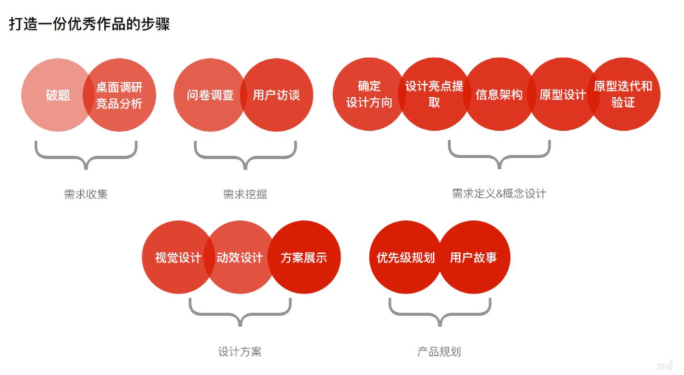

3.1. 商业化产品“七步设计法” 1¶
方法论试图提炼出从0到1设计商业化产品的通用思路，重点介绍宏观设计逻辑，即具备普适性的全链路商业化产品设计流程，而不倾向于介绍某款单品类产品的设计细节。但也会在各个流程环节会特别说明适用的产品，比如适合to C产品还是to B产品，或者适合广告产品、会员产品还是其他商业化产品。
3.1.1. 如何设计一款专业的、具备竞争力的商业化产品呢？¶
你们可能会从不同的视角给出不同的答案，这可能是岗位差异造成的。然而，当我们从公司的视角考虑商业化产品设计时，就必须具备全局思维，即面向商业化全链路来设计可闭环变现的产品。
在商业流通市场中，无论商业化产品属于哪种形态或者哪个种类，产品所遵循的商业化底层逻辑是相通的，即无论你的变现模式是卖流量、卖软件、卖服务，还是其他的变现模式，最终你卖的都是“商品”，都需要遵循商业化规律和一些普适的商业操作标准。

Fig. 3.1.1 打造一份优秀作品的步骤¶
3.1.2. “七步设计法”¶
输出BRD、资源评估报告等。
输出产品设计规划、解决方案设计规划等。
输出PRD（产品需求文档）、产品交付清单等。
输出产品报价单、SKU目录、财务模型等。
输出售卖渠道策略、售卖政策、销售协议等。
输出各类商业化产品包装资料、商业化产品官网等。
输出产品发布管理文档、各类产品培训资料等。